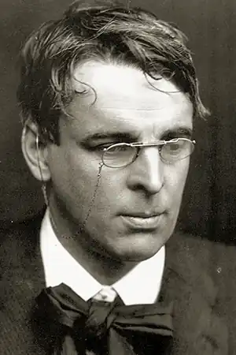
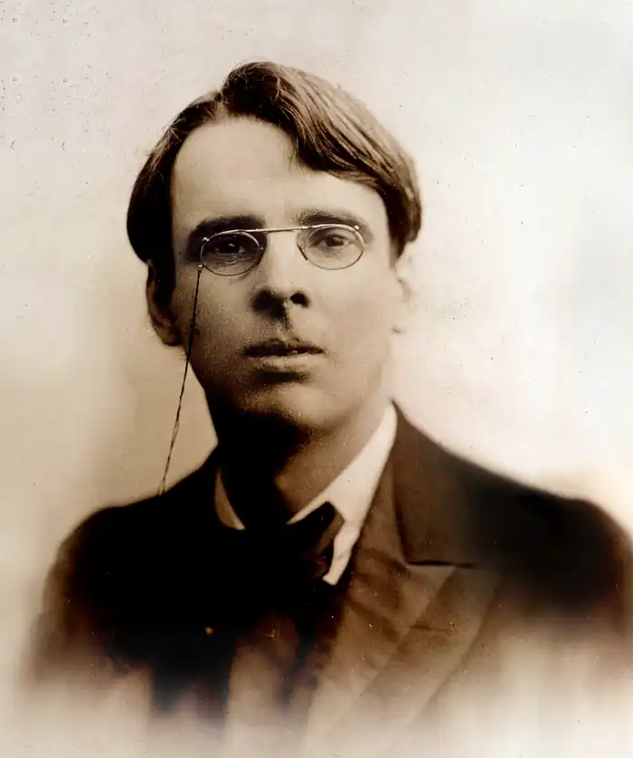

ЄЙТС, Вільям Батлер (Yeats, William Butler — 13.06.1865, Дублін — 28.01.1939, с. Рокбрюн, Франція) — ірландський письменник, лауреат Нобелівської премії 1923 р.
Значення Єйтса — поета, драматурга, прозаїка і критика, котрий вплинув на характер цілої епохи ірландської літератури, виходить далеко за національні рамки. Його справедливо вважають одним із найвизначніших англомовних поетів XX ст. Творчість Єйтса, яка розпочалася у 80-х pp. XIX ст. в колі англійських символістів, що групувалися довкола журналів "Жовта книга" і "Савой", зазнала багатьох змін, рішучих відмов від зробленого раніше та повернень на новому естетичному рівні до забутих мотивів. Єйтс став засновником і головним натхненником ірландського літературного відродження, частини загальнокультурного руху зламу століть, яке живилося ідеями визвольного руху і відобразило бурхливий ріст національної самосвідомості ірландського народу.
Єйтс народився в Сендімаунті (околиця Дубліна) в сім'ї художника. Під впливом батька він готувався стати живописцем, вчився в художній школі, але успіх перших публікацій віршів визначив його поетичну кар'єру. Починаючи з першої книги "Мандри Ойсина та інші вірші" ("The Wanderings of Oisin and Other Poems", 1889) до поезії Єйтса входить національна міфологія, котра поступово з теми стає засобом поетичного вираження, метафорою та символом, здатними передати невимовне, сказати про стан сучасного світу. У поемі, яка дала назву збірці Єйтса, звернувшись до традиційної ірландської легенди, створив сучасний за світовідчуттям твір з лейтмотивом "земної туги" і "древнього людського смутку". 90-ті роки — найбільш символістський період у творчості Єйтса з характерним для нього колоритом "кельтських сутінок". Під цією назвою Єйтс опублікував свою першу збірку оповідань "Кельтські сутінки"("The Celtic Twilight", 1893), які постали із щоденникових нотаток в часи мандрів по західній Ірландії. Рання поезія Єйтса (збірки "Троянда" — "The Rosa", 1893; "Вітер в очереті" — "The Wind Amond the Reeds", 1899) — це "політ у чарівну країну", у світ мрії, пошуки "неможливої, неймовірної краси". Традиційні для символістської поезії образи птахів, хвиль, вітру асоціюються з персонажами національної міфології, в якій Єйтс не лише знаходив нові, ще не опановані мистецтвом символи, а й живий контакт із народною творчістю. З початком нового століття Єйтс позбувається надмірного колориту таємничості. Він критично оцінює свої ранні вірші, відмовляється від умовно-орнаментального, декоративного стилю, який підхопили його численні імітатори. У збірці "Відповідальності" ("Responsibilities", 1914) він заявив про своє прагнення "відкинути все штучне, виробити в поезії стиль, подібний до звичайної мови, простий, як найпростіша проза, як крик серця". Єйтс розлучається з мріями, від яких "зав'януло листя в лісі", він заперечує замежовий, чарівний світ, населений "дітьми богині Дану", до якого охоче прагнув у 90-х pp. У цій збірці з'являються нові персонажі, від імені яких дедалі частіше виступає поет: злиденні, самітники, дурні. Як королі, вони входять в уявлення Єйтса про романтичну Ірландію. Зневага до середньої верстви породжувала ідеалізацію тих, хто не входив сюди: королів і злидарів, вільних, як королі: Побагатіли бідняки,А багачі — ті навпаки,А я до раю утікаю.Товариші шкільних забав!Хто духом з вас не занепав,Панчохи грішми не напхав?Царі стають там жебраками. Грайливий вітер, хоч старий,А я тікаю від нори,А я до раю утікаю.Отак, як вітер цей, чи ж другБодай один — ділив мій дух?Цей вітер, вільний від наруг!..Царі стають там жебраками. ("Тікаю до раю", тут і далі пер. О. Мокровольського)Єйтс уважно вдивлявся в те, що відбувалось в Ірландії. Повстання 1916 p., національно-визвольна війна і подальша громадянська війна викликали в душі поета суперечливі почуття: він готовий був визнати героїзм повстанців, але кровопролитна боротьба вселяла гіркоту і відчай. Ставлення до повстання відображене у вірші "Великдень 1916" ("Easter 1916"), опублікованому в збірці "Майкл Робартес і танцівниця" ("Michael Robartes and the Dancer", 1821). Лейтмотивом проходить образ Грізної Краси, що протистоїть Вічній Красі ранніх віршів. Він сподівається на оновлення і водночас відчуває страх перед боротьбою, яка потребує жертв і перетворює серця людей у камінь. Образ серця, що перетворюється у камінь, стає символом фанатичної відданості ідеї революції на шкоду життю та любові. Мотив самозречення, відречення від природних людських почуттів уже виникав у інтимній ліриці Єйтса, яку надихала ірландська революціонерка Мод Гонн. Мод була його безнадійним коханням упродовж значної частини життя. Єйтс кілька разів пропонував їй одружитися, але отримував відмови. Вже у похилому віці, коли поету минуло за п'ятдесят, Єйтс одружився із англійкою Джорджі Гайд-Ліз, вдвічі за нього молодшою. У них народилося двоє дітей — син, котрий став політиком, і дочка — у майбутньому художниця. У Мод Гонн він вбачав рідкісне поєднання жіночої краси й камінної твердості. У цьому, на його думку, полягало її власне нещастя, яке відлунювало стражданням і в його серці. Тепер акцент змінюється, виразно утверджується думка, що камінне серце бездушне. Песимістичні настрої, навіяні спогляданням страхіть, які завершують історію двадцяти століть, особливо відчутні у вірші тієї ж збірки "Друге пришестя" ("The Second Coming"). Трагічним світовідчуттям пронизані поетичні книги Єйтса "Вежа"("The Tower", 1928) та "Гвинтові сходи" ("The Winding Stair", 1933). У семичастинному циклі "Роздуми під час Громадянської війни" ("Meditations in Time of Civil War", 1923) поет постає скорботним свідком насильства, яке загрожує зруйнувати колишню велич культури, створеної численними поколіннями, водночас сумніваючись у її величі: Що, як увінчані гербами двері,Минулим гордим зведені двірці,Ходіння по паркетах, шерх матерій,Палати, зали, галереї ці,Де предки на портретах — лорди, пери;Що, як озії, що звели отці, Не величчю благословлять явились,А красти — велич, гіркоту і милість?Його переслідує видиво "майбутньої пустки", він говорить про "насильство на дорогах", про "зло, що звело голову", шукає порятунку у світі, зверненому до минулого, в "холодних снігах мрії". Згодом, у вірші "Що втрачено?" ("What Was Lost", 1937) Єйтс підсумує пережите: "Я оспівую втрачене і жахаюся здобутого". 20-ті роки в житті Єйтса були часом визнання його заслуг. Восени 1923 р. йому присуджено Нобелівську премію з літератури. В Ірландії він мав величезний вплив як у літературних, так і в громадських колах. Свідченням тому є здобуття почесного ступеня в Королівському університеті в Белфасті та у Дублінському університеті Трініті Коледж, куди замолоду, вважаючи себе непідготовленим, він не зважився вступати. Життя Єйтса в останнє десятиліття, здавалося би, перебігало спокійно, але це були роки внутрішньої боротьби, що знайшло своє відображення у його творах. Він приймає життя, але його згода з ним протилежна до заспокоєння. Ним опановує "обурення", земні пристрасті беруть гору над безпристрасною мудрістю. Найближчим йому письменником стає Дж. Свіфт. За рік до смерті, готуючи до друку твори другої половини 30-х років, Єйтс назвав їх "Нові вірші". Видані вони були вже після смерті поета під назвою "Останні вірші" ("Last Poems", 1939). Значне місце в цьому циклі займає сповідальна, філософська лірика, з посиленими мотивами тривоги, сумнівів, які нерідко прибирають діалогічної форми ("Людина йлуна" — "The Man and the Echo"). Експериментальна поезія 20—30-х років залишилася чужою для Єйтса. Йому не імпонувало захоплення сучасних поетів вільним віршем, в якому, на його думку, втрачалися ознаки віршованої організації. Єйтс зберіг у своїх творах традиційні розміри. Драматичність, внутрішня напруга його поетичного мовлення досягається за допомогою "пристрасного та виразного синтаксису". Як драматург, Єйтс ставив своїм завданням створення поетичного театру, предметом якого повинне стати "життя серця", внутрішнє буття. Місцем дії його символістських п'єс 1890— 1900-х pp. переважно слугували селянська хижка або палац (умовні селяни й аристократи як втілення народного первня), конфлікт будувався на протиставленні світу життєвого й ідеального. Пошуки всеохопних втілень людських почуттів, прагнення підкреслити універсальність того, що відбувається на сцені, привели Єйтса в середині 10-х років до створення "театру масок" чи "п'єс для танцівників", у яких він використовував прийоми японського театру Но. Маска, що закриває лице актора, на думку Єйтса, повинна була замінити випадкові рухомі риси обличчя незмінним виразом сутності, статичної за своєю природою. "Чотири п'єси для танцівників" ("Four Plays for Dancers", 1921): "Біля Яструбиної криниці" ("At the Hawk's Well"), "Єдина ревність Емер", "Голгота" ("Calvary"), "Привиди минулого" ("The Dreaming of the Bones") — показували життя в його трагічних кульмінаціях. У центрі перших двох із них стоїть герой ірландського епосу Кухулін, до образу якого Єйтс звертався і в інших своїх творах. До нього він звернувся і у своїй останній п'єсі "Смерть Кухуліна", що стала його поетичним заповітом. Легендарному сюжетові про загибель героя, котрий вступив у нерівний бій, Єйтс надав відтінку трагічної іронії. Смертельно поранений Кухулін прив'язує себе до скелі, аби померти стоячи, але сліпий волоцюга відтинає йому голову ножем для хліба, сподіваючись на обіцяну винагороду розміром у 12 пенсів. У фіналі дія переноситься на ярмарковий майдан, де вулична співачка виконує пісню про легендарних героїв. За кілька місяців до смерті Єйтс написав віршовану автоепітафію "Під тінню Бен Балбена":Кинь холодний погляд На життя, на смерть, Вершнику, проїжджай! Творчість Єйтса справила великий вплив на розвиток англомовної поезії XX. Українською мовою окремі твори Єйтса переклали О. Мокровольський, В. Коптілов, М. Стріха. А. Саруханян, Т. Даніленко.